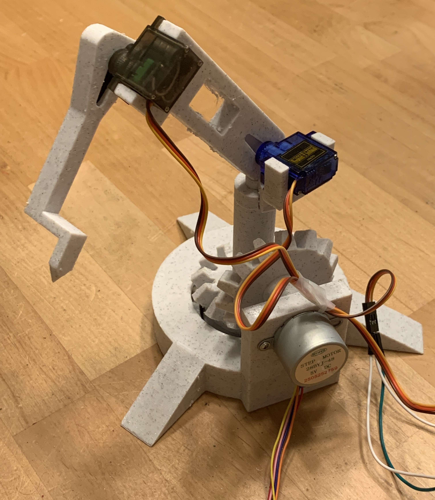

This project consisted of being provided 2d solidworks drawings for each part of the Engine and CADing each part according to its respective drawing along with forming the correct assembly and applying proper mates beyond the basics (Such as CAM mates and Gear mates).
